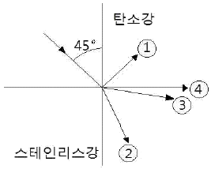
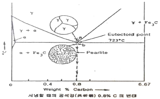

초음파비파괴검사기사(구) (2007-08-05 기출문제)
1과목: 초음파탐상시험원리
1. 초음파탐상시험에서 탐상절차서와 합격기준이 아주 상세하게 서면화 되었을 때 검사원에 대한 훈련의 필요성을 가장 잘 설명한 것은?
- 절차서와 합격기준이 상세한 경우 더 이상 검사원에 대한 훈련은 불필요하다.
- 절차서와 합격기준이 아무리 상세하게 잘 작성되어 있다 해도 훈련은 계속되어야 할 것이다.
- 절차서와 합격기준만으로는 부족하며 시편의 이용을 잘하면 훈련은 불필요하다.
- 대개 합격기준의 까다로운 정도에 따라 검사원의 훈련여부 문제를 결정한다.
(정답률: 알수없음)

2. 초음파탐상시험시 미세한 불연속을 찾기 위한 조건으로 가장 적합한 것은?
- 가능한 한 낮은 주파수의 탐촉자 사용
- 관통법을 사용한다.
- 가능한 한 높은 주파수의 탐촉자 사용
- 크기가 작은 탐촉자 사용
(정답률: 알수없음)
3. 탐촉자의 분해능은 대역폭(band width ⊿f)에 직접 비례한다. 대역폭의 값이 0.25, 공진주파수가 1㎒인 수정진동자가 있다면 이 탐촉자를 수침법으로 사용할 경우 Q 값은 얼마인가?
- 0.25
- 0.4
- 2.5
- 4
(정답률: 알수없음)
4. 티탄산바륨 진동자의 단점으로 가장 옳은 것은?
- 수용성이다.
- 음파 송신효율이 낮다.
- 초음파 수신효율이 나쁘다.
- 기계적 임피던스가 높다.
(정답률: 알수없음)
5. 초음파탐상시험에서 주파수를 증가시킬 경우 일정 직경의 진동자에 있어서 빔 분산각의 변화로 옳은 것은?
- 빔 분산각은 증가한다.
- 빔 분산각은 진동자의 직경에만 의존하므로 변화하지 않는다.
- 빔 분산각은 상대적으로 감소한다.
- 빈 분산각은 파장에만 관계되므로 일정하다.
(정답률: 알수없음)
6. 초음파공명시험에서 1차공명(기본공명)은 시험체의 두께가 음파 파장의 얼마 크기일 때 발생되는가?
- ½
- 1
- ¼
- 2
(정답률: 알수없음)
7. 탄소강과 스테인리스강이 계면을 이루며 접촉되어 있을 때 그림과 같이 탄소강으로부터 스테인리스강 쪽으로 음파가 입사할 경우 스테인리스강 중의 음의 굴절을 올바르게 설명한 것은?(단, 탄소강의 음속은 6000㎧, 밀도는 7.8g/cm3, 스테인리스강의 음속은 5000㎧, 밀도는 7.9g/cm3이다.)

- ①과 같이 모두 반사할 것이다.
- ②와 같이 굴절각이 45°보다 작은 각으로 굴절할 것이다.
- ③과 같이 굴절각이 45°보다 큰 각으로 굴절할 것이다.
- ④와 같이 경계면으로 진행할 것이다.
(정답률: 알수없음)
8. 캐나다의 최북단 -50℃의 곳에 배관용접부 초음파탐상 검사 용역이 있었다. 접촉 매질을 준비하려고 할 때 다음 중 어느 것이 가장 좋은가?
- D.I.water
- Oil
- Glycerin
- Ultragel
(정답률: 알수없음)
9. 누설검사시 샤를의 법칙에 사용되는 온도는?
- Kelvin 온도
- Rankin 온도
- Centigrade 온도
- Brown 온도
(정답률: 알수없음)
10. 광학적 성질을 이용한 스트레인 측정법으로 옳게 조합된 것은?
- X 선회절법, 중성자회절법
- 응력도료법, Thermography
- 광탄성피막법, 모아레법
- 전기저항법, 와전류탐상법
(정답률: 알수없음)
11. 초음파탐상시험에서 주파수가 증가한다면 주어진 직경의 탐촉자의 빔퍼짐(beam spread)은 어떻게 변하는가?
- 감소한다.
- 증가한다.
- 변하지 않는다.
- 증가와 감소를 반복한다.
(정답률: 알수없음)
12. 다음 재료 중에서 초음파의 감쇠현상이 가장 심하게 일어나는 것은?
- 알루미늄 주조물
- 마그네슘 주조물
- 탄소강 주조물
- 구리 주조물
(정답률: 알수없음)
13. 초음파의 투과와 반사를 결정할 때 음향임피던스는 중요한 인자이다. 다음 중 음향임피던스가 가장 큰 재료는 무엇인가?
- 물
- 유리
- 공기
- 철
(정답률: 알수없음)
14. 탐상면에 수직인 내부결함을 굴절각Ɵ의 탐촉자로 탐상할 때 결함 상단부에 에코가 진행한 빔 진행거리가 WU, 결함하단부에 에코가 진행한 빔 진행거리가 WL이라 할 때 결함높이 H를 구하는 식은 무엇인가?
- H = (WU - WL)ㆍsecƟ
- H = (WU - WL)ㆍtanƟ
- H = (WU - WL)ㆍcosƟ
- H = WLㆍcosƟ - WUㆍsinƟ
(정답률: 알수없음)
15. 3㎒의 주파수로 알루미늄 소재에 초음파를 투과시켰을 때 초음파의 파장은 얼마인가?(단, 알루미늄에서 초음파의 종파속도는 6300㎧이다.)
- 1.1㎜
- 1.6㎜
- 2.1㎜
- 2.6㎜
(정답률: 알수없음)
16. 경사각 탐촉자를 사용할 때 다음 중 가장 자주 점검해야 하는 내용은?
- 입사점 및 굴절각
- 감도
- 원거리분해능
- 불감대
(정답률: 알수없음)
17. 다음 중 근거리음장이 가장 큰 탐촉자는?
- 직경 ½인치, 주파수 1㎒
- 직경 ½인치, 주파수 2㎒
- 직경 1인치, 주파수 2㎒
- 직경 2인치, 주파수 1㎒
(정답률: 알수없음)
18. 다음 중 진동자가 가장 얇은 탐촉자는?
- 1㎒ 탐촉자
- 5㎒ 탐촉자
- 10㎒ 탐촉자
- 20㎒ 탐촉자
(정답률: 알수없음)
19. 다음은 와전류탐상시험에서 표피효과의 기준이 되는 침투깊이에 대해 기술한 것이다. 올바른 것은?
- 시험체의 투자율이 낮을수록 침투깊이는 작다.
- 시험체의 도전율이 높을수록 침투깊이는 크다.
- 시험주파수가 낮을수록 침투깊이는 작다.
- 탄소강과 알루미늄 중 탄소강이 침투깊이가 작다.
(정답률: 알수없음)
20. 주어진 재질내에서 판파의 속도를 결정하는 요소 중 가장 거리가 먼 것은?
- 진동자의 크기
- 판의 두께
- 주파수
- 파의 입사각도
(정답률: 알수없음)
2과목: 초음파탐상검사
21. 다음 중 A스캔 장비에서 스크린을 더 밝게 하려면 무엇을 조정하여야 하는가?
- 펄스의 길이
- 펄스의 반복주파수
- 리젝트
- 게인(gain)
(정답률: 알수없음)
22. 초음파의 펄스반복율은 장비 내의 타이머(timer)에 의해 조정되고 있다. 일반적으로 사용되는 장비의 펄스반복율은 매 초당 몇 회 정도 범위인가?
- 60∼2000
- 2000∼20000
- 20000∼400000
- 400000∼6000000
(정답률: 알수없음)
23. B스캔 장비에 있는 Rate발생기는 다음 중 어디에 직접 연결되는가?
- CRT 강도 회로
- 펄스발생기 회로
- RF 증폭회로
- 수평 소인회로
(정답률: 알수없음)
24. 다음 중 판두께 25㎜인 용접부위를 굴절각 71°의 탐촉자로 경사각탐상할 경우 가장 적당한 측정범위(㎜)는?
- 100
- 200
- 300
- 400
(정답률: 알수없음)
25. 루사이트 슈(Lucite Shoe)가 부착된 탐촉자의 장점이 아닌 것은?
- 진동자의 마모를 방지해 준다.
- 곡면체에서도 검사가 가능하다.
- 분해능과 감도가 증가한다.
- 경사각 초음파탐상검사가 가능하다.
(정답률: 알수없음)
26. 후판의 라미네이션 결함 탐상에 다음 중 가장 효과적인 검사법은?
- 수직탐상법
- 경사각탐상법
- 표면파탐상법
- 탠덤탐상법
(정답률: 알수없음)
27. 오스테나이트계 스테인리스강의 초음파탐상시험에 대한 다음 설명 중 틀린 것은?
- 오스테나이트계 스테인리스강이나 9% 니켈강에서 모재 및 열영향부에서 발생한 결함은 횡파 경사각탐상으로 검출이 가능하다.
- 오스테나이트계 스테인리스강 용접부의 초음파탐상에 있어서 점집속탐촉자나 2진동자 탐촉자는 S/N비의 개선을 위해 이용된다.
- 횡파 경사각탐촉자를 이용하여 오스테나이트계 스테인리스강 용접부를 초음파탐상할 때 의사에코가 나타나는 경우가 있다.
- 오스테아이트계 스테인리스강 용접부내를 종파가 전파 할때 종파 음속은 그 전파방향과 결함의 주 성장방향과는 무관하다.
(정답률: 알수없음)
28. 단조품의 수직탐상에서 탐상감도 설정시 대비시험편의 인공 결함을 이용할 경우의 장점으로 틀린 것은?
- 검사결과의 상호 비교가 용이하다.
- 검출 목적에 부합되는 깊이 및 크기의 인공 불연속을 임의로 만들 수 있다.
- 탐상감도를 나타내기가 용이하다.
- 표면거칠기 및 시험체 곡률 등의 영향이 자동적으로 보정된다.
(정답률: 알수없음)
29. 두께가 15㎜인 강용접부를 굴절각 70°인 탐촉자로 탐상하여 80㎜에서 결함지시가 나타났다. 이 때 탐촉자와 용접부 사이의 거리가 75㎜라면, 이 결함의 탐촉자와 결함간 거리(㎜)는 약 얼마인가?
- 14.2
- 26.5
- 75.2
- 77.8
(정답률: 알수없음)
30. 단조품에 대한 수직탐상시 저면에코 방법으로 탐상감도를 설정할 경우의 장점이 아닌 것은?
- 표면거칠기를 보정하지 않아도 된다.
- 시험체 곡률을 보정하지 않아도 된다.
- 시험체 형상에 구애받지 않는다.
- 시험편 방식에 비하여 감도설정이 쉽다.
(정답률: 알수없음)
31. 용접부의 초음파탐상시험시 용접선에 평행한 방향으로 놓인 불연속이 검출되었을 때 결함의 지시길이를 dB drop법으로 결정하려 할 때 가장 바람직한 주사방법은?
- 목돌림 주사
- 진자 주사
- 좌우 주사
- 전후 주사
(정답률: 알수없음)
32. 초음파탐상검사시 탐상도형에 대한 설명으로 틀린 것은?
- 라미네이션은 다중에코가 생기고 에코가 등간격으로 여러개 나오는 경우가 많다,
- 구멍 형태의 부식부로부터 나타나는 에코파형은 매우 예리한 파형이다.
- 비금속개재물에 의해 얻어진 에코는 일반적으로 저면 에코도 동시에 나타난다.
- 표면 에코와 저면 에코와 사이에 에코가 나타나면 라미네이션이나 비금속개재물 등의 내부결함이라 판단해도 좋다.
(정답률: 알수없음)
33. 표준시험편인 STB-G에 대한 설명 중 틀린 것은?
- V15-4는 표준구멍(ø1.4㎜)의 깊이 15㎜로 가공된 것이다.
- V2에서 V8까지의 시험편은 거리진폭 특성곡선용이다.
- V15 시리즈는 증폭의 직선성 점검용이다.
- 단면이 60×60㎜인 것과 50×50㎜ 두 종류가 있다.
(정답률: 알수없음)
34. 2개의 경사각 탐촉자를 용접부의 선상에서 전후로 배열하여 각각 송ㆍ수신용으로 하는 초음파탐상 주사법은?
- 진자주사
- 탠덤주사
- 평행주사
- 지그재그주사
(정답률: 알수없음)
35. 어떤 시험체를 탐촉자 5Z20N을 사용하여 탐상하였더니 임상에코가 많이 나타나서 탐상이 되지 않았다. 탐상을 원활히 할 수 있도록 하기 위해서는 다음 중 어느 탐촉자를 사용하는 것이 가장 적절한가?
- 10Q10N
- 5Q20N
- 2Z20N
- 5Z10N
(정답률: 알수없음)
36. X형 개선의 용접부결함 중 내부 용입부족은 방향성 때문에 검출하기 어려운 결함이다. 다음 중 이를 검출하기에 가장 적합한 방법은?
- 태덤탐상법
- 수침법
- 표면파법
- 용접선상 주사법
(정답률: 알수없음)
37. 용접부를 경사각탐촉자로 탐상시 초음파빔 폭보다 큰 용접부 방향의 결함길이를 측정하는 주사 방법은?
- 전후주사
- 좌우주사
- 목돌림주사
- 진자주사
(정답률: 알수없음)
38. 직경 12㎜, 중심주파수 2㎒인 수침용 초음파탐촉자의 물에서의 근거리 음장한계거리는?
- 12
- 24
- 48
- 96
(정답률: 알수없음)
39. 압연제품이나 단강제품과 비교시 주조제품을 탐상할 때 주조 제품에 주로 발생하는 에코는?
- 임상에코
- 고스트에코
- 표면에코
- 저면에코
(정답률: 알수없음)
40. 펄스반사법 초음파탐상장치를 사용하여 강용접부를 60°의 경사각 탐촉자로 탐상할 때 용접부 부근에서 에코가 나타났다. 결함의 종류를 추정하는 방법에 관한 설명 중 틀린 것은?
- 최대에코 높이를 이용하는 방법으로 탐상하여 에코 높이의 변화를 이용하여 결함종류를 추정한다,
- 여러 주사방법으로 탐상하여 에코높이의 변화를 이용하여 결함종류를 추정한다,
- 탐상기에 나타난 에코의 파형 모양을 이용하여 결함 종류를 추정한다.
- 수직 탐촉자를 이용하여 결함모양을 그려서 결함종류를 추정한다.
(정답률: 알수없음)
3과목: 초음파탐상관련규격및컴퓨터활용
41. 강 용접부의 초음파탐상 시험방법(KS B 0896)에서 1회 반사법의 경우 탐촉자 - 결함거리는 대략 어느 정도인가?
- 0 ∼ 0.5 S
- 0.5 ∼ 1.0 S
- 1.0 ∼ 1.5 S
- 1.5 ∼ 3.0 S
(정답률: 알수없음)
42. 강 용접부의 초음파탐상 시험방법(KS B 0896)에 따라 강용접부 두께 6㎜를 탐상하고자 한다. 전원 전압의 변동에 따라 탐상기의 감도변화와 세로축 및 시간축의 이동량은 다음 중 어느 범위 내까지 허용되는가?
- 감도변화는 ±1dB, 세로축 및 시간축 이동량은 풀 스케일의 ±2%
- 감도변화는 ±2dB, 세로축 및 시간축 이동량은 풀 스케일의 ±2%
- 감도변화는 ±1dB, 세로축 및 시간축 이동량은 풀 스케일의 ±1%
- 감도변화는 ±2dB, 세로축 및 시간축 이동량은 풀 스케일의 ±1%
(정답률: 알수없음)
43. 초음파탐상 시험용 표준시험편(KS B 0831)에 의한 STB-G형 감도 표준시험편 중 인공결함의 직경(d)이 서로 다른 한가지는?
- STB-G V5
- STB-G V15-2
- STB-G V15-4
- STB-G V8
(정답률: 알수없음)
44. 강 용접부의 초음파탐상 시험방법(KS B 0896)으로 상온(10∼30℃)에서 시험부위를 경사각탐상할 때, 굴절각 70°인 경사각 탐촉자의 실제 굴절각을 점검하였다. 다음 중 탐상검사에 사용해서는 안되는 탐촉자의 굴절각은?
- 68.5°
- 71°
- 71.5°
- 72.5°
(정답률: 알수없음)
45. 건축용 강판 및 평강의 초음파탐상시험에 따른 등급분류와 판정기준(KS D 0040)에서 수직탐촉자의 사용시 시험체의 두께에 따른 탐상감도, 공칭주파수 및 진동자의 유효 지름이 다르다. 다음 중 시험체 두께 별 적용사항이 틀린 것은?
- 시험체의 두께가 13 이상 20㎜ 이하일 때 탐상감도는 STB-N1 25%-진동자, 공칭주파수는 5㎒, 진동자의 유효지름은 20㎜이다.
- 시험체의 두께가 20 초과 40㎜ 이하일 때 탐상감도는 STB-N1 50%-진동자, 공칭주파수는 5㎒, 진동자의 유효지름은 20㎜이다.
- 시험체의 두께가 40 초과 60㎜ 이하일 때 탐상감도는 STB-N1 70%-진동자, 공칭주파수는 5㎒, 진동자의 유효지름은 20㎜이다.
- 시험체의 두께가 60㎜ 초과할 때는 주문자와 제조자의 협의에 따른다.
(정답률: 알수없음)
46. 강 용접부의 초음파탐상 시험방법(KS B 0896)에서 규정하는 경사각탐상에서 에코폰이 구분선에 의한 Ⅱ영역이 의미하는 것은?
- L선 이하
- L선 초과 M선 이하
- M선 초과 H선 이하
- H선 초과
(정답률: 알수없음)
47. 강 용접부의 초음파탐상 시험방법(KS B 0896)에서 경사각 탐촉자의 “5Q10×10A70”의 불감대 허용한계는 얼마인가?
- 10㎜
- 15㎜
- 25㎜
- 35㎜
(정답률: 알수없음)
48. 보일러 및 압력용기에 대한 초음파비파괴검사(ASME Sec.V, Art.23 SE 114)는 직접접촉법에 의한 초음파 펄스에코수직탐상 시험방법의 권고사항이다. 시험체의 표면거칠기 평균값이 100∼400마이크로인치 일 때 규정에 맞는 접촉매질은 무엇인가?
- SAE 10wt. 모터오일
- SAE 20wt. 모터오일
- SAE 30wt. 모터오일
- SAE 40wt. 모터오일
(정답률: 알수없음)
49. 보일러 및 압력용기에 대한 초음파비파괴검사(ASME Sec.V, Art.5)에서 교정시험편은 시험할 주조품의 전 살두께에 대해 사용하는 경우 ± 몇 %의 살두께를 갖는 것으로 제작되어야 하는가?
- 10
- 15
- 25
- 30
(정답률: 알수없음)
50. 보일러 및 압력용기에 대한 초음파비파괴검사(ASME Sec.V, Art.4)에 따라 탐상검사시 탐촉자를 이동하는 속도(인치/초)는 통상 얼마를 초과해서는 안되는가?
- 4
- 6
- 8
- 10
(정답률: 알수없음)
51. 압력용기용 알루미늄 합금판에 대한 초음파탐상시험(ASME Sec.V, Art.23 SB 548)기준에서 완전하게 저면반사의 완전 감쇠(95% 이상)를 만드는 불연속부를 나타내는 범위가 얼마를 초과하면 그 판을 불합격으로 하는가?
- 1인치
- 1.5인치
- 2인치
- 2.5인치
(정답률: 알수없음)
52. 보일러 및 압력용기의 재료에 대한 초음파비파괴검사(ASME Sec.V, Art.5)에 따라 주조품을 탐상 검사할 때 수직탐촉자를 사용하고, 특수한 경우에는 경사각탐촉자를 추가로 사용한다. 특수한 경우에 대한 내용으로 가장 적절한 것은?
- 주조품의 재질이 알루미늄일 때
- 사용주파수가 0.5㎒ 일 때
- 주조품의 전면과 후면과의 각도가 15°를 넘을 때
- 자동 DAC 장치를 사용할 때
(정답률: 알수없음)
53. 강판의 수직빔 초음파탐상시험 표준(ASME Sec.V, SA 435)에 따라 2인치의 두께를 갖는 강판을 검사할 때, 전체 저면반사의 손실을 일으키는 불연속부의 최대합격지름은 얼마인가?
- 2.54㎝(1인치)
- 5.08㎝(2인치)
- 7.62㎝(3인치)
- 10.16㎝(4인치)
(정답률: 알수없음)
54. 강 용접부의 초음파탐상 시험방법(KS B 0896)에서 경사각 탐촉자의 접근한계길이를 정하고 있다. 진동자의 공칭치수가 10×10㎜, 공칭 굴절각이 45°일 때 접근 한계길이는 몇 ㎜인가?
- 15
- 18
- 20
- 25
(정답률: 알수없음)
55. 알루미늄 관 용접부의 초음파 경사각탐상 시험방법(KS B ⑤21)에 의한 원둘레 이음 용접부의 경우 탐상시험 준비에 대한 설명으로 옳지 않은 것은?
- 측정 범위는 STB-A1의 R100㎜를 알루미늄에서 102㎜로 조정한다.
- 입사점은 STB-A1 또는 STB-A3를 사용하여 1㎜ 단위로 측정한다.
- 굴절각은 RB-A4AL의 표준 구멍을 이용하여 공칭 굴절각도에 따라 정해진 스킵거리에서 측정한다.
- 거리진폭 특성곡선은 흠 에코의 평가에 사용되는 빔노정의 범위에서 높이가 90% 이하 10%이상이 되도록 조정한다.
(정답률: 알수없음)
56. 거리에 관계없이 자료방생 즉시 처리하는 양방향 통신 기능을 가진 정보처리 방식은?
- 온라인 처리
- 일괄 처리
- 원격 일괄 처리
- 오프 라인 처리
(정답률: 알수없음)
57. 컴퓨터에서 산술과 논리 연산을 담당하는 것은?
- 모니터
- 주기억장치
- 중앙처리장치
- 보조기억창치
(정답률: 알수없음)
58. 전자우편을 이용할 때 사용자의 컴퓨터에서 다른 시스템에 도착한 전자우편을 볼 수 있도록 하는 프로토콜은?
- POP3
- SMTP
- NMTP
- HTTP
(정답률: 알수없음)
59. IP 주소를 유동으로 할당받는 프로토콜은?
- TCP
- DHCP
- IP
- UDP
(정답률: 알수없음)
60. 소비자 측면에서 전자상거래의 특징이라고 볼 수 없는 것은?
- 물건에 하자가 있을 때 환불, 교환이 불편하다.
- 언제든 편리한 시간에 상품을 구입할 수 있다.
- 항상 저렴한 가격에 상품을 구입할 수 있다.
- 상품에 대한 풍부한 정보를 얻을 수 있다.
(정답률: 알수없음)
4과목: 금속재료학
61. 다음 중 구상흑연 주철에 대한 설명으로 옳은 것은?
- 인장강도는 20kgf/mm2이하이다.
- 주조상태에서 흑연이 구상으로 정출한다.
- 피로한도는 회주철에 비해 1.5 ~ 2.0배 낮다.
- 구상흑연주철의 기지 조직은 페라이트만이 존재한다.
(정답률: 알수없음)
62. 자경강(Self hardening steel)이란 무엇인가?
- 담금질에 의해서 경화되는 강
- 극히 서냉해도 경화되는 강
- 공랭으로도 경화되는 강
- 뜨임까지 해야 경화되는 강
(정답률: 알수없음)
63. 구리의 절삭성 및 도전율을 개선시키는 원소로 가장 적합한 것은?
- Te
- H
- Ag
- Zn
(정답률: 알수없음)
64. 다음 중 Muntz metal에 대한 설명으로 옳은 것은?
- 구리에 20%의 Zn이 첨가된다.
- α + β의 조직이다.
- 상온에서 전연성이 아주 높으며, 강도는 낮다.
- 내식성이 크므로 탈아연 부식을 일으키지 않는다.
(정답률: 알수없음)
65. 다음 구리 중 진공용해하여 0.001 ~ 0.002%의 O2 함량을 가지며 유리 봉착성이 좋아 진공관용 재료 및 전자기기등에 이용되는 재료는?
- 무산소동
- 탈산동
- 전기동
- 정련동
(정답률: 알수없음)
66. Lead Frame 재료로서 요구되는 성질에 대한 설명으로 틀린것은?
- 리드부의 변형을 반복해도 절손하지 않을 것
- 열방출성이 높은 재료(device의 고출력화)
- 펀칭 및 굽힘가공성이 양호할 것
- Si와의 열팽창차가 클 것
(정답률: 알수없음)
67. 마찰계수가 적고 고온 고압에 견디며 주석을 주성분으로 하는 베어링용 합금의 Sn - Sb - Cu계 화이트메탈은?
- 켈밋
- 인청동
- 배빗메탈
- 알루미늄 청동
(정답률: 알수없음)
68. 표면 경화 열처리에 대한 설명으로 틀린 것은?
- 고체침탄의 경우 침탄촉진제로 탄산바륨(BaCO3)이나 탄산나트륨(Na2CO3) 등을 사용한다.
- 액체침탄의 경우 침탄촉진제로 탄산칼륨(K2CO3)이나 염화칼륨 (KCl)을 사용한다.
- 화염경화법은 강재의 표면을 강력한 가열력을 가진 산소-아세틸렌 불꽃을 사용하여 급속하게 가열한 후 냉각수로 급랭시켜 표면만을 경화시키는 방법이다.
- 액체침탄법은 산화방지에는 효과적이나 온도조절은 용이하지 못하다.
(정답률: 알수없음)
69. 다음 중 분말야금법에 대한 설명으로 틀린 것은?
- 생산성, 실수율이 높이 양산품의 제조에 적합하다.
- 최종제품의 형상으로 제조할 수 있어 절삭가공을 생략 할수 있다.
- 용해법으로 생기는 편석, 결정립 조대화의 분제점이 적다.
- 제품의 정밀도가 좋지 않으며, 용융점까지의 고온이 필요하다.
(정답률: 알수없음)
70. 황동가공재를 상온에서 방치하거나 저온풀림으로 얻은 스프링강재는 사용 중 시간의 경광에 따라 경도 등 제 성질이 악화되는 현상은?
- 가공변화
- 경년변화
- 소성변화
- 자성변화
(정답률: 알수없음)
71. 표점거리 50㎜, 직경 5㎜인 봉재 시편을 인장시험 결과 최대하중 3000kgf에서 절단되었고, 절단 후 표점거리가 55㎜ 였을 때 인장강도(kgf/mm2)는?
- 140.8
- 152.8
- 210.1
- 222.3
(정답률: 알수없음)
72. [그림]과 같이 공석조성ㄷ의 강을 오스테나이트 영역까지 가열한 다음, 공석온도 바로 밑의 온도까지(b점) 서냉하였을 때, 관찰되는 조직은 펄라이트이다. 이 때 펄라이트를 구성하는 페라이트와 시멘타이트의 중량비는 약 얼마인가?(단, α-Fe의 탄소 고용도는 0.02%이다.)

- 페라이트 - 12%, 시멘타이트 - 88%
- 페라이트 - 88%, 시멘타이트 - 12%
- 페라이트 - 48%, 시멘타이트 - 52%
- 페라이트 - 52%, 시멘타이트 - 48%
(정답률: 알수없음)
73. Fe-C 평형상태도에서 나타나는 변태 중 자기변태점은?
- A1 변태
- Acm 변태
- A2 변태
- A3 변태
(정답률: 알수없음)
74. 구상흑연 주철 제조의 구상화 첨가원소로 옳은 것은?
- Mg, Cu
- Al, Cr
- Cu, Mo
- Ca, Mg
(정답률: 알수없음)
75. 다음 중 압연 등과 같은 가공에 의해서만이 그 성질을 강화 개선시킬 수 있는 비열처리형 합금계로 옳은 것은?
- 2000계 Al 합금
- 5000계 Al 합금
- 6000계 Al 합금
- 7000계 Al 합금
(정답률: 알수없음)
76. 다이캐스팅용 아연합금에 첨가되는 Mg원소에 대한 설명으로 옳은 것은?
- Mg의 최대 고용도는 5%이하이다.
- 입계부식을 억제하는 작용을 한다.
- β → α+β'의 변태 속도를 촉진시킨다.
- Mg 함량이 증가하면 용탕의 유동성을 좋게 한다.
(정답률: 알수없음)
77. 표면경화 방법 중에서 세라다이징 처리시 확산 침투시키는 금속은?
- B
- Al
- Cr
- Zn
(정답률: 알수없음)
78. 탄소강에 합금원소 첨가에 따른 영향으로 결정립을 조대화시키는 원소로 알맞게 짝지어진 것은?
- Mn, P
- Si, P
- Mn, S
- Mn, Si
(정답률: 알수없음)
79. 비중이 6.5 융점이 1852℃이며, 특히 농황산, 강알칼리, 염산 등에 강하여, 화학장치용이나 원자로용 내식재료로 사용하는 금속은?
- Ge
- Th
- V
- Zr
(정답률: 알수없음)
80. W계 고속도공구강에서 W의 영향으로 적합하지 않은 것은?
- 내열성을 향상시킨다.
- 내마모성을 향상시킨다.
- W6C의 탄화물을 형성한다.
- 고온에서는 결정립을 조대화시킨다.
(정답률: 알수없음)
5과목: 용접일반
81. 아크용접시 아크의 길이에 대한 설명으로 올바른 것은?
- 아크의 길이는 심선의 직경이 2배 이상이 좋다.
- 아크의 길이가 너무 짧으면 용융금속에 산화나 질화 현상이 일어난다.
- 아크길이가 너무 짧으면 스패터링이 심하게 된다.
- 아크길이가 너무 짧으면 아크가 불연속이 되기 쉽고 발생되는 열양이 작게 되어 용입이 불량하게 된다.
(정답률: 알수없음)
82. 직류 아크용접에서 정극성의 설명 중 틀린 것은?
- 용접봉의 용융속도가 느리다.
- 용접봉을 음극에 접속한다.
- 모재의 용입이 깊다.
- 얇은 판 용접에 적합하다.
(정답률: 알수없음)
83. 가스용접에서 불변압식(A형) 팁번호 1번 사용시 용접 가능한 판 두께로 가장 적합한 것은?
- 1㎜
- 4㎜
- 10㎜
- 15㎜
(정답률: 알수없음)
84. 화학 반응에 의한 발열을 이용하여 시행하는 용접법은?
- 플라스마 용접
- 테르밋 용접
- 프로젝션 용접
- 서브머지드 용접
(정답률: 알수없음)
85. 다음 중 토치 대신 가늘고 긴 강관을 사용하여 절단 산소를 보내서 절단하는 것은?
- 분말 절단
- 산소창 절단
- 수중 절단
- 프로판 가스절단
(정답률: 알수없음)
86. 용접부에 생긴 잔류응력을 제거하려 할 때 가장 적합한 열처리법인 것은?
- 불림
- 담금질
- 풀림
- 뜨임
(정답률: 알수없음)
87. 용접부를 피닝하는 주목적으로 가장 적합한 것은?
- 모재의 재질을 검사한다.
- 미세한 먼지 등을 털어 낸다.
- 응력을 강하게 하고 변형을 크게 한다.
- 용접부의 잔류응력을 완화하고 변형을 방지한다.
(정답률: 알수없음)
88. 용접부의 균열이 발생하는 것과 가장 관계가 적은 것은?
- 용접봅의 탄소와 유황의 함량
- 용착부의 급냉
- 잘못된 용접시공
- 비드의 두께
(정답률: 알수없음)
89. 아크 용접부에 생기는 서리 기둥 모양의 결함으로 대단히 취성이 많은 파면의 일종이며 현미경으로 보면 작은 기공과 비금속 개재물이 있는 것은?
- 선상 조직
- 마이크로 피셔
- 루트 균열
- 은점
(정답률: 알수없음)
90. 방사선검사에서 발견할 수 없는 용접 결함은?
- 슬래그 섞임
- 용입부족
- 균열
- 라미네이션
(정답률: 알수없음)
91. 피복 아크 용접기의 정격전류가 200A이고, 정격 사용율이 50% 일 때, 이 아크 용접기의 연속 사용이 가능한 최대 전류는 약 몇 A인가?
- 121
- 136
- 141
- 200
(정답률: 알수없음)
92. 피복아크용접에서 피복제에 습기가 잇는 저수소계의 용접봉을 사용했을 때 용접부에 발생하는 가장 중요한 결함은?
- 유해한 가스가 발생
- 균열 및 기공의 발생
- 과대한 용접 변형의 발생
- 언더컷의 발생
(정답률: 알수없음)
93. 모재의 한쪽 또는 양쪽에 여러 개의 돌기를 만들어 이 부분에 용접전류를 집중시켜 용접하는 방식의 용접법은?
- 롤러 점용접
- 포일 심용접
- 프로젝션 용접
- 업셋 용접
(정답률: 알수없음)
94. 가스용접용 아세틸렌 가스의 성질에 대한 설명으로 틀린 것은?
- 순수한 아세틸렌 가스는 무색 무취의 기체이다.
- 비중은 약 1.9정도로 공기보다 무겁다.
- 아세톤에 25배 용해된다.
- 산소와 적당히 혼합하여 연소시키면 약 3000℃ 열을 발생한다.
(정답률: 알수없음)
95. 다음 용접 비드 배치법 중에서 아주 얇은 박판이나 용접 후의 비틀림을 방지하는데 가장 적합한 것은?
- 덧살올림법
- 케스케이드법
- 스킵법
- 전진 블록법
(정답률: 알수없음)
96. 아크 전압 30V, 아크 전류 200A, 용접속도 10㎝/min으로 피복 아크 용접을 할 경우 발생하는 전기적 에너지는?
- 3600 J/㎝
- 36000 J/㎝
- 6000 J/㎝
- 60000 J/㎝
(정답률: 알수없음)
97. 용접기의 무부하전압 100V, 아크전압이 40V, 아크전류가 300A 이고, 내부손실이 5kw이면 용접기의 효율과 역율은?
- 효율 70.6%, 역율 56.7%
- 효율 56.7%, 역율 70.6%
- 효율 53%, 역율 58.5%
- 효율 58.5%, 역율 53%
(정답률: 알수없음)
98. 불황산가스 텅스텐 아크용접(TIG)에서 청정작용 설명으로 다음 중 가장 적합한 것은?
- 텅스텐 전극에 의한 질화작용에 의하여 모재 표면의 산화막을 제거하는 작용
- 정극성에서는 전자가 모재에 빠르게 충돌하기 때문에 모재에 열을 발생시키는 작용
- 헬륨가스를 사용하는 정극성에서는 아크가 그 주변의 모재 표면에 산화막을 제거하는 작용
- 아르곤가스를 사용하는 역극성에서는 아크가 모재표면의 산화막을 제거하는 작용
(정답률: 알수없음)
99. 땜납재의 은납의 주성분은?
- 금, 은, 아연
- 은, 동, 아연
- 동, 은, 크롬
- 아연, 주석, 납
(정답률: 알수없음)
100. 탄산가스 아크용접에서 뒤 댐 재료의 종류가 아닌 것은?
- 세라믹 뒷 댐재
- 글라스 테이프
- 구리 뒷 댐재
- 석면 뒷 댐재
(정답률: 알수없음)